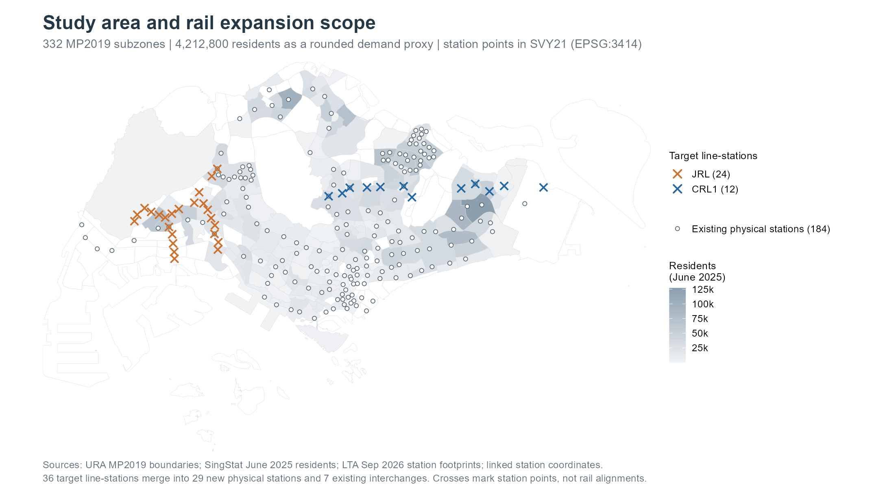
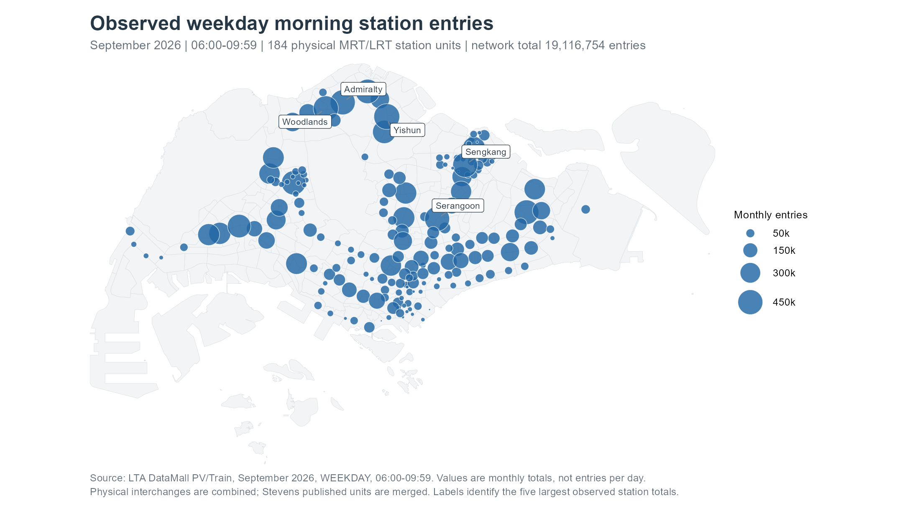
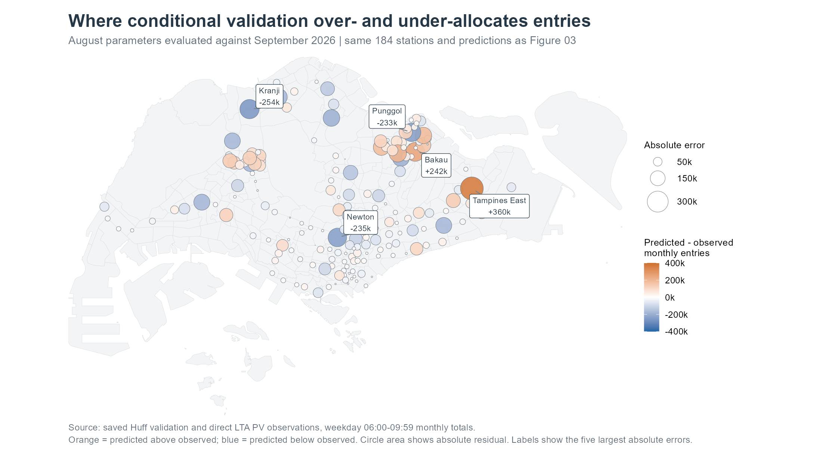
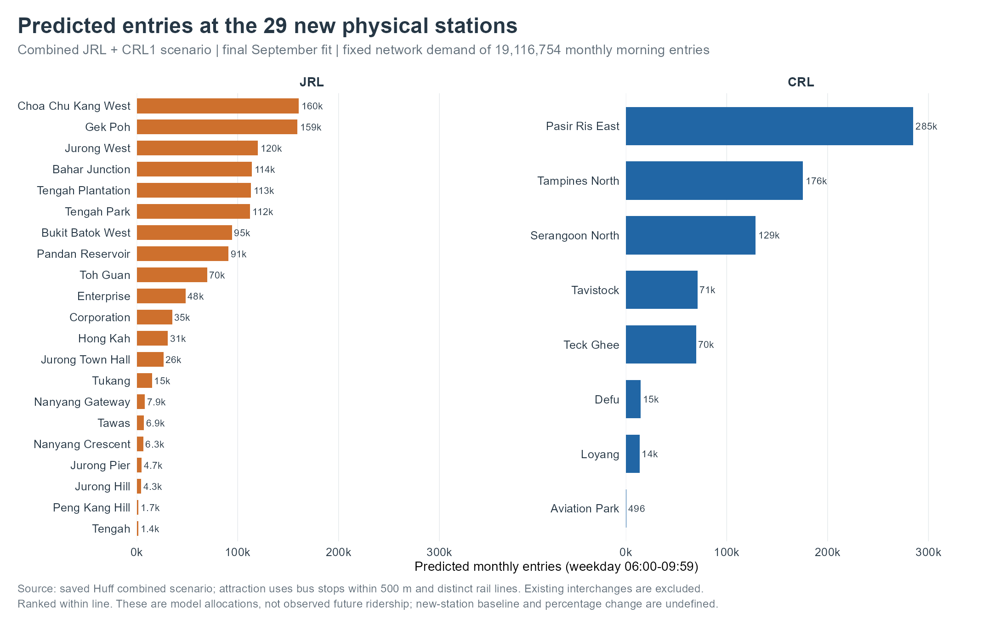
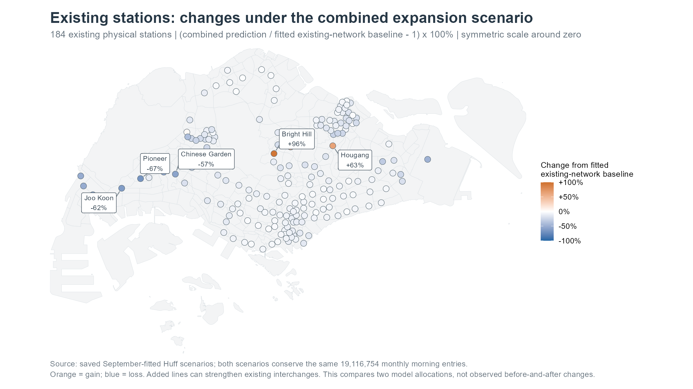
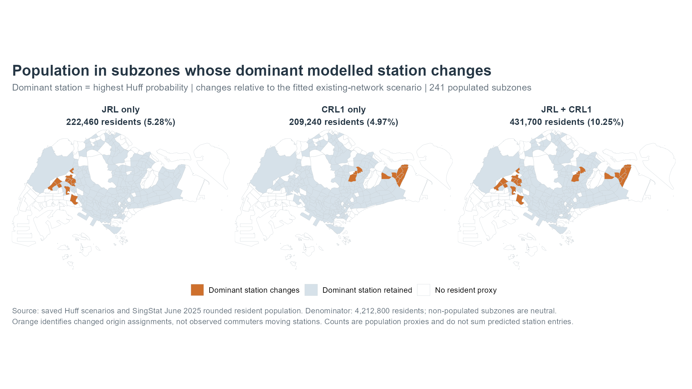
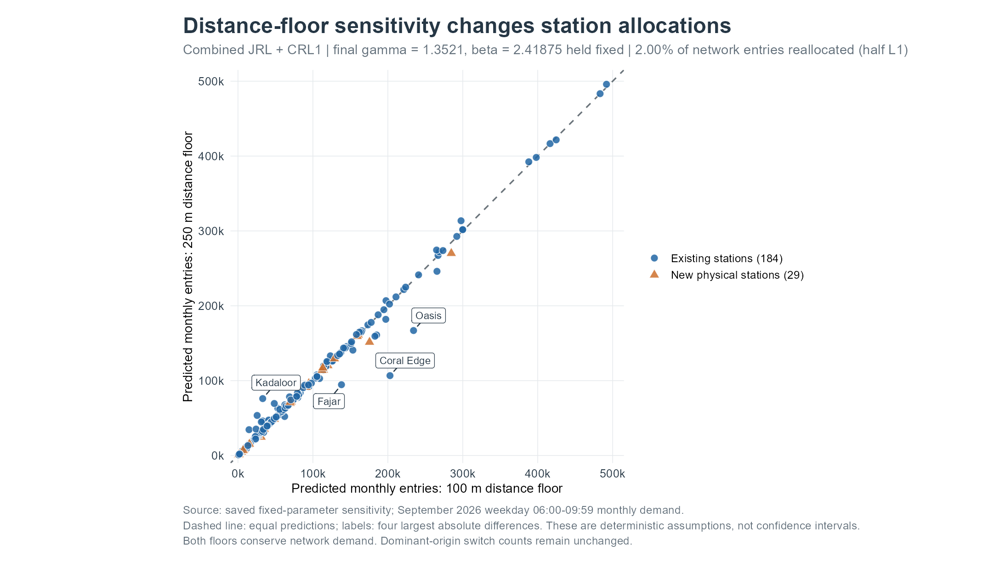

| Month | PV tap-ins | OD origin trips | PV minus OD | Gap / PV |
|---|---|---|---|---|
| 2026-08 | 18,080,820 | 17,976,479 | 104,341 | 0.577% |
| 2026-09 | 19,116,754 | 19,001,903 | 114,851 | 0.601% |
Estimating morning station entries and changing rail market areas
Take-home Exercise 3 · ISSS626 Geospatial Analytics and Applications
Exercise overview · Presentation
1 Overview
This exercise examines how residential demand, station connectivity and access distance can be combined to estimate Singapore’s morning MRT/LRT station entries. It then adds the assignment’s original 24 Jurong Region Line (JRL) stations and 12 Cross Island Line Phase 1 (CRL1) stations to explore changes in station market areas.
The fitted Huff model improves on an equal-attraction, inverse-square reference: September conditional validation WAPE falls from 61.66% to 49.56%. A reference that retains August’s observed station shares performs much better, with 1.35% WAPE. The spatial model therefore has limited value for next-month prediction at existing stations. I use it to explore conditional redistribution when new stations have no observed history, with substantial uncertainty in individual station estimates.
With both lines included, the dominant modelled station changes for subzones containing 431,700 residents, or 10.25% of the residential population. This is a population-based indication of changing market areas. It is not an observed passenger count. All scenarios retain September’s 19,116,754 monthly weekday morning entries, so their results describe allocation within a fixed market.
The analysis addresses three questions:
- How well can a common-parameter Huff model reproduce the distribution of existing station entries?
- Which proposed stations receive the largest allocations, and which existing stations gain or lose modelled entries?
- Where do dominant station market areas change, and how sensitive are these findings to the distance assumption?
2 Data and study definition
2.1 What counts as a morning entry?
The response is a monthly total of weekday tap-ins during 06:00–09:59, selected with DAY_TYPE == "WEEKDAY" and TIME_PER_HOUR %in% 6:9. It covers MRT and LRT stations. These numbers are neither average weekday volumes nor four-hour totals for a single day. Station entries also differ from transfers within the paid rail network and from passenger loads on individual lines.
I use August 2026 for calibration and September 2026 for temporal validation. After validation, I refit the same specification to September to produce the existing-network baseline and the expansion scenarios. The known September network total is used in validation; therefore, the test concerns station shares conditional on that total.
2.2 Sources and preparation
| Input | Version and unit | Use in this exercise |
|---|---|---|
| SingStat resident population | June 2025; age, sex and dwelling categories by MP2019 subzone | Sum categories to obtain residential market weights |
| URA no-sea subzones | MP2019 geography; 332 polygons | Origin geography and map context |
| LTA station footprints | September 2026; polygons identified by station codes | Derive station representative points where available |
| Professor-linked station coordinate library | Pinned GitHub commit 9f5972c71db8a529801eee9c527946a45a78e409 |
Supplement coordinates and select the JRL24/CRL1 targets |
| LTA bus stops | September 2026; operational stop points | Count unique stops within 500 m of each station |
| LTA DataMall PV train data | August and September 2026; station/hour/day-type totals | Direct observed tap-in response |
| LTA DataMall OD train data | Same months; origin–destination/hour/day-type totals | Independent origin-sum and roster checks |
Population is supplied in rounded categories, so the sum of 4,212,800 residents should not be treated as an exact census count. I preserve the supplied June 2025 vintage rather than combine different population years. The boundary source is the official URA MP2019 dataset; the coordinate library is retained at a fixed commit.
01-prepare-public.R checks category keys, sums population, normalises planning-area/subzone names and joins to the boundaries. All positive-population records match. Of 332 subzones, 241 have positive population and enter the model; the remaining subzones remain on maps as context. A zero-resident subzone does not establish zero rail demand: work, education and other nonresidential activities are outside this origin specification.
All spatial layers are transformed to SVY21 / Singapore TM, EPSG:3414, which gives distances in metres. st_point_on_surface() places each origin within its subzone. Station points are taken from the union of matching LTA footprint polygons where possible; otherwise, the pinned coordinate library supplies the point. st_distance() then gives straight-line origin–station distances. This avoids angular distance calculations, but does not represent actual walking routes or barriers.
2.3 Reconcile physical stations before modelling
The unit of analysis is a physical station, including a whole interchange. Line codes are retained in a crosswalk but do not become competing copies of the same station. The current network contains 184 physical stations. The monthly data contain 185 reported code units because Stevens is separately reported as DT10 and TE11; their entries are summed once into the same physical station. Slash-combined interchange codes are normalised before matching.
The pinned coordinate CSV has older operational labels. I add Keppel, Cantonment and Prince Edward Road to the baseline: they opened on 12 July 2026 and occur in both months’ actual data. CC33/CC34 are mapped to Marina Bay/Bayfront, with older CE2/CE1 retained as aliases. LTA’s CCL6 page and Art in Transit labels support these corrections. TE30, TE31, DT36 and DT37 do not occur in either monthly dataset; I do not create zero observations for them from a target opening year.
The two monthly rosters match all 184 baseline physical stations with no unresolved mappings or missing morning code-hour records. An independent read of the original archives also found no missing or negative volume values. This reconciliation matters because duplicated interchanges would distort both observed shares and the Huff denominator.
2.4 PV tap-ins and OD origin totals differ
The DataMall API Guide, version 6.11 dated 30 October 2026, distinguishes station tap-ins/tap-outs from OD trip totals. I retain both measures instead of assuming they must be identical.
The gap persists after code reconciliation. The relevant guide sections do not state a suppression, rounding or processing rule that explains it, so I do not assign a cause. Because the requested response is entries, direct PV TOTAL_TAP_IN_VOLUME controls observed_boardings. OD origin sums provide a diagnostic and are not rescaled to force equality. The data preparation stops on unresolved stations or missing required inputs rather than silently replacing them with zeros.

The populated residential subzones define the origins of this model. The proposed JRL locations concentrate in the west, while CRL1 extends through the northeast and east. Some proposed markers coincide with existing stations because they add interchange lines. The 36 line-station targets add 29 distinct physical alternatives: 21 under JRL and eight under CRL1. Seven enlarge existing interchanges. This distinction is important when interpreting a denser network: adding a line at an interchange changes its connectivity index without creating a second competing physical station.
3 Constructing the interaction data
3.1 Origins and market potential
For origin subzone \(i\), resident population \(N_i\) gives the market weight. For month \(m\), total observed network entries \(T_m\) give the scale:
\[ M_{im}=T_m\frac{N_i}{\sum_i N_i}. \]
M is a modelled local market potential measured in monthly entry equivalents. It assumes the same morning rail-entry propensity per resident in every populated subzone. It does not imply that all recorded entries originate at residents’ homes, or that each resident makes the same number of trips. This simple residential allocation is a major limitation, especially for employment and school areas.
Construct the September residential market
origin_frame <- tab("origins")
stopifnot(!anyDuplicated(origin_frame$origin_id))
stopifnot(abs(sum(origin_frame$market_potential) - total_sep) < 1e-6)
knitr::kable(row.names = FALSE, data.frame(
Subzone = p$origins$SUBZONE_N[match(head(origin_frame$origin_id, 5), p$origins$origin_id)],
Residents = fmt(head(origin_frame$population, 5)),
`Market potential` = fmt(head(origin_frame$market_potential, 5), 1),
check.names = FALSE), align = c("l", "r", "r"))| Subzone | Residents | Market potential |
|---|---|---|
| ANG MO KIO TOWN CENTRE | 4,850 | 22,008.2 |
| CHENG SAN | 26,530 | 120,387.3 |
| CHONG BOON | 24,980 | 113,353.7 |
| TOWNSVILLE | 19,830 | 89,984.2 |
| SHANGRI-LA | 17,690 | 80,273.3 |
3.2 Destinations, attraction and observed entries
Each destination contains its physical ID, point, number of nearby bus stops, number of distinct rail lines and observed September entries. Its independent attraction index in scenario \(s\) is
\[ A_{js}=(1+B_j)L_{js}, \]
where \(B_j\) is the number of unique operational bus stops within 500 m and \(L_{js}\) is the number of distinct lines at the station. The added one ensures a station with no nearby bus stops still has positive attraction. All 5205 supplied stops pass the operational-status and unique-ID checks. A stop counts once even if it serves several services.
Bus-stop proximity is a rough feeder-access proxy, and line count represents interchange opportunities. Neither measures service frequency, destinations reachable, station capacity or the quality of walking connections. Crucially, observed station entries are the calibration response, not an input to \(A_j\); using them as attraction would make the fit circular. For future scenarios, bus stops remain as observed in September 2026 and line counts change when JRL/CRL1 is added.
3.3 Existing and expanded spatial interaction frames
The complete origin–station product is retained, rather than truncating choices at a radius. This gives 44,344 existing pairs (241 × 184) and 51,333 expanded pairs (241 × 213). The frame columns are origin_id, station_id, distance_m and attraction; market potential joins by origin ID and observed entries join by physical station ID. JRL-only and CRL-only calculations select their respective available destinations from the same distance matrix.
The full origin frame, destination frame with observations, existing interaction frame and expanded interaction frame are available for inspection. Keeping both IDs on every pair makes row ordering less likely to cause an unnoticed allocation error.

Observed entries vary considerably across the network. The largest stations provide important tests for a model calibrated to aggregate shares, but a residential map alone cannot explain every high-volume station. The response also includes trips starting near workplaces, schools and other activities. I use this observed pattern as the comparison for calibration and validation, while keeping it separate from the station attraction index. The map describes the existing network in September; later scenario maps describe model outputs and should not be read as new observations.
4 Huff model and calibration
4.1 Choice probabilities and station totals
The probability that an entry assigned to origin \(i\) uses station \(j\) is
\[ P_{ij}=\frac{A_j^{\gamma}\widetilde d_{ij}^{-\beta}} {\sum_{k\in J}A_k^{\gamma}\widetilde d_{ik}^{-\beta}}, \qquad \widetilde d_{ij}=\max(d_{ij},100\text{ m}), \]
and the predicted station total is \(\widehat V_j=\sum_i M_iP_{ij}\). \(\gamma\) controls the influence of attraction and \(\beta\) controls distance decay. Both are shared across all stations. The 100 m floor prevents zero or very short representative-point distances from giving extreme or undefined weights. Probabilities sum to one within each origin, so predicted station entries sum to the supplied network total.
This follows the probabilistic market-share structure documented by the MCI package reference. I implement the calculation directly in model-core.R to make ID checks, the floor and the optimisation objective explicit. MCI uses a signed distance exponent in some functions; here \(\beta>0\) appears with a minus sign in the equation.
4.2 Fitting strategy and reference model
fit_huff() minimises squared differences between predicted and observed station shares:
\[ \underset{0\leq\gamma\leq3,\;0.5\leq\beta\leq6}{\operatorname{minimise}} \sum_j\left(\frac{\widehat V_j}{T}-\frac{V_j}{T}\right)^2. \]
The bounds restrict the search to nonnegative attraction effects and decreasing distance weights. optim(method = "L-BFGS-B") runs from nine combinations of \(\gamma\in\{0.5,1,2\}\) and \(\beta\in\{1,2,4\}\); the converged solution with the smallest objective is retained. Log weights are centred within each origin before exponentiation to avoid numerical overflow. The reference gives every station equal attraction and uses \(\beta=2\), so it tests whether the fitted attraction specification improves a simple distance-only allocation.
The sequence separates fitting from evaluation: fit August shares, apply August parameters to September with September’s known total, then refit September for scenario analysis. No future station observations are used.
| Fit | Gamma | Beta | Share SSE |
|---|---|---|---|
| August calibration | 1.3499 | 2.4108 | 0.0031312 |
| September final refit | 1.3521 | 2.4188 | 0.0031554 |
The estimates are close across the two months and lie inside the parameter bounds. At the September estimate, doubling attraction multiplies an unnormalised station weight by approximately 2.55; doubling distance above the floor multiplies it by approximately 0.19. The final probability also depends on competing stations. All 18 optimisation runs converge to nearly identical solutions, which supports numerical stability for these starts. It does not establish behavioural causality, global identification or high forecasting accuracy.
5 Validation and existing station estimates
5.2 Large residuals expose limitations of the residential proxy
Residuals are prediction minus observation. Positive values indicate overprediction and negative values indicate underprediction. The largest errors are useful diagnostics because a reasonable network total can hide very poor local allocations.
| Station | Observed | Predicted | Residual |
|---|---|---|---|
| Tampines East | 231,256 | 591,169 | 359,913 |
| Kranji | 263,280 | 9,208 | -254,072 |
| Bakau | 38,607 | 281,008 | 242,401 |
| Newton | 318,097 | 83,253 | -234,844 |
| Punggol | 369,583 | 136,662 | -232,921 |
| Renjong | 3,814 | 207,216 | 203,402 |

Tampines East and several LRT stations are strongly overpredicted, while Kranji, Newton and Punggol are among the underpredicted stations. A whole subzone’s population can be concentrated near one station by its representative point. Missing employment origins, access barriers, feeder services and differences between MRT and LRT may also contribute. These are possible explanations, rather than causes established by the map. The model has no evidence that can separate their effects. The large local errors should remain in view when interpreting the proposed-station rankings.
5.3 Final current-network estimates
The September refit supplies the baseline used in all scenario comparisons. The following table shows its eight largest station allocations alongside observations. Complete station estimates and subsequent changes are retained in the station scenario table, while the validation table preserves the independent-period comparison.
| Station | September observed | September refit |
|---|---|---|
| Tampines East | 231,256 | 592,467 |
| Admiralty | 450,847 | 487,282 |
| Sengkang | 444,963 | 463,852 |
| Sembawang | 431,155 | 424,255 |
| Yishun | 484,091 | 412,805 |
| Tampines | 437,782 | 388,788 |
| Pioneer | 343,631 | 387,235 |
| Serangoon | 447,272 | 347,619 |
Tampines East leads the model ranking despite its large positive residual. Thus, a high allocation indicates what this residential-access specification produces; it does not independently establish unmet real demand or an investment priority.
6 Adding JRL and CRL1
6.1 Scenario design
The four scenarios are the existing network, existing + JRL24, existing + CRL1, and existing + both. The JRL selection is JS1–JS12, JE1–JE7 and JW1–JW5; it excludes the later JS2A Forest Hill addition. CRL1 is CR2–CR13. The official JRL information and CRL1 alignment distinguish the assignment’s line stations from genuinely new physical stations.
I freeze the September parameters, residential markets and bus-stop data. Each scenario changes available stations and distinct line counts, then recalculates every origin’s denominator. Existing interchanges remain one physical destination: Choa Chu Kang, Boon Lay and Jurong East gain JRL; Pasir Ris, Hougang, Ang Mo Kio and Bright Hill gain CRL. This gives 184, 205, 192 and 213 physical destinations respectively.
The exercise is a September-equivalent full-opening comparison, not a time-sequenced forecast for 2028–2030. It does not estimate future population, new housing, employment, induced trips or a redesigned bus network. Every scenario conserves 19,116,754 entries. New stations have no baseline observation, so their baseline, change and percentage-change fields are NA.
6.2 Allocations to proposed stations

In the combined scenario, Pasir Ris East receives about 284,664 monthly entry equivalents, followed by Tampines North and Choa Chu Kang West. These are allocations of the fixed September market under the fitted specification. New stations collectively receive 1,982,640 entries, or 10.37% of the network total. Smaller allocations at some industrial or emerging-development locations partly reflect the residential-only origins and frozen 2025 population. They do not establish that those stations will have little future use.
| Station | Monthly entries | Network share |
|---|---|---|
| Pasir Ris East | 284,664 | 1.49% |
| Tampines North | 175,550 | 0.92% |
| Choa Chu Kang West | 160,449 | 0.84% |
| Gek Poh | 159,115 | 0.83% |
| Serangoon North | 128,668 | 0.67% |
| Jurong West | 119,978 | 0.63% |
| Bahar Junction | 114,079 | 0.60% |
| Tengah Plantation | 113,210 | 0.59% |
JRL-only and CRL-only results are close to their combined-scenario values in their respective corridors, but are not exactly additive. Competition is recalculated across the whole available choice set. The full estimates for all 36 proposed line stations, including existing interchanges, are provided in Appendix A.
6.3 Existing stations: compare with the model baseline
For an existing station, I calculate \(\Delta_j=\widehat V_{j,s}-\widehat V_{j,\mathrm{existing}}\) and \(100\Delta_j/\widehat V_{j,\mathrm{existing}}\). The reference is the September fitted existing network, not observed September entries. Comparing a scenario directly with observations would mix the expansion effect with the model’s existing error.

Hougang, Ang Mo Kio, Bright Hill and Choa Chu Kang gain allocated entries in the combined scenario. Their additional line raises the attraction index, although greater competition offsets this effect at some other interchanges. Pioneer, Tampines, Lakeside and Chinese Garden have the largest absolute losses. These results follow the model’s trade-off between nearby alternatives and interchange attraction. Losses describe redistribution within the fixed total; they do not imply that actual future station entries must fall, because future demand growth is held outside this comparison.
| Station | Baseline | With both lines | Change | Change (%) |
|---|---|---|---|---|
| Hougang | 237,501 | 388,072 | 150,571 | 63.4% |
| Ang Mo Kio | 203,915 | 291,993 | 88,078 | 43.2% |
| Bright Hill | 35,239 | 69,023 | 33,785 | 95.9% |
| Choa Chu Kang | 289,007 | 300,153 | 11,146 | 3.9% |
| Pioneer | 387,235 | 126,020 | -261,215 | -67.5% |
| Tampines | 388,788 | 265,033 | -123,755 | -31.8% |
| Lakeside | 220,587 | 103,229 | -117,358 | -53.2% |
| Chinese Garden | 193,376 | 82,934 | -110,442 | -57.1% |
| Tampines East | 592,467 | 491,754 | -100,713 | -17.0% |
The JRL-only scenario produces a small gain at Choa Chu Kang and substantial reallocation from Pioneer, Lakeside and Chinese Garden. Under CRL1 alone, Hougang, Ang Mo Kio and Bright Hill gain, while Tampines and Tampines East lose. The relatively large percentage gain at Bright Hill starts from a small fitted baseline, so absolute changes should be considered alongside percentages.
6.4 Existing station market areas
A probabilistic market overlaps: every origin can allocate entries to more than one station. For a readable map, I define a subzone’s dominant station as the station with its largest \(P_{ij}\). This assigns one label to the whole subzone and discards the remaining probabilities. It is therefore a summary of the model, not a surveyed catchment boundary or the claim that every resident uses the same station.
| Scenario | Switching subzones | Residents in those subzones | Resident share | Entries at new stations |
|---|---|---|---|---|
| + JRL | 11 | 222,460 | 5.28% | 1,229,110 |
| + CRL1 | 10 | 209,240 | 4.97% | 762,315 |
| + Both | 21 | 431,700 | 10.25% | 1,982,640 |

JRL changes the dominant station in 11 origins containing 222,460 residents; CRL1 changes ten origins containing 209,240. Together, 21 origins contain 431,700 residents (10.25%). The spatial concentration follows the two expansion corridors. These are residents of whole subzones with changed winners, not observed riders switching station, individual switch probabilities or modal shift. Gradual changes in station probabilities can also occur in subzones whose winner stays the same.
7 Sensitivity and planning interpretation
7.1 A larger distance floor leaves winners unchanged but moves volumes
I repeat all scenarios with a 250 m floor while holding September parameters and the network total fixed. This isolates sensitivity to the treatment of very short distances. It does not recalibrate parameters or provide a confidence interval.

Dominant-station switch counts and population totals are unchanged under this check. Station volumes are more sensitive: in the combined scenario, half the sum of absolute changes is approximately 381,912 entries, or 2.00% of the fixed market. Some small station allocations change by more than 100%; Coral Edge loses about 96,102 entries while Riviera gains about 19,783. Stable winners therefore do not establish stable volumes. The floor affects the concentration of origin demand among nearby alternatives, especially when one representative point is very close to a station.
| Scenario | Entries reallocated (half L1) | Share of total |
|---|---|---|
| Existing | 328,349 | 1.72% |
| + JRL | 341,806 | 1.79% |
| + CRL1 | 368,401 | 1.93% |
| + Both | 381,912 | 2.00% |
7.2 What this adds to an urban transport discussion
The scenarios identify locations where an expanded network may alter access competition and feeder relationships. The western reallocation around JRL suggests reviewing bus–rail access around both new stations and nearby existing stations. The CRL1 results highlight the dual role of new local access and stronger existing interchanges. These are useful places for more detailed investigation, rather than station-level capacity recommendations supported by this model alone.
For sustainable transport planning, the residential market maps can help frame questions about access and coverage. They cannot determine reductions in car use, emissions or road congestion because competing modes and induced demand are absent. Similarly, a decrease in modelled entries at an existing station may reflect improved nearby access, but this analysis has no passenger welfare or travel-time measure with which to assess that benefit.
7.3 Limitations that change the conclusion
- Residential demand is incomplete. June 2025 resident counts omit the location of employment, school, visitor and nonresident trip origins. The same entry propensity is assigned to every resident. Future development around JRL/CRL1 is held fixed.
- Subzone points simplify access. A single interior point may poorly represent a large or irregular subzone. Straight-line distance misses crossings, barriers, entrances, walking time and bus travel time. The distance-floor check demonstrates meaningful local volume sensitivity.
- Attraction is a coarse index. Nearby stop counts and distinct lines omit frequencies, routes served, reliability, station capacity and the MRT/LRT transfer hierarchy. A larger line count mechanically improves attraction; its scenario effect is not a separately estimated causal interchange benefit.
- Temporal evidence is narrow. Two adjacent months offer one conditional holdout. Shared-parameter stability does not establish accuracy during line opening, changing land use or a different travel regime. The final September fit is in-sample.
- Network demand is fixed. All scenarios allocate the observed September total. They cannot forecast total demand in 2030, induced rail use, fare effects, transfers or line loads. No confidence intervals are estimated; the 100/250 m comparison covers only one modelling choice.
The exercise therefore provides a transparent first comparison of station access competition. The Huff allocation improves on a simple spatial reference, but the historical-share reference performs much better at existing stations. More credible forecasts would require finer residential and nonresidential origins, network-based access costs and service information, followed by validation on more periods or an actual network opening. The new-station scenarios remain conditional comparisons rather than validated future forecasts.
8 Reproduction and source notes
The report runs from the exercise directory. The YAML parameter recompute: true calls ensure_ex03_analysis() in R/workflow.R, which executes the local preparation, ridership, model and figure stages. It performs no downloads or package installation. Setting recompute: false reuses valid saved outputs after cache checks. Raw data must already be present; missing or inconsistent inputs stop the workflow.
# From Take-home_Ex/Take-home_Ex03 after obtaining the documented raw inputs:
quarto render technical-report.qmd
quarto render executive-summary.qmd
quarto render Take-home_Ex03.qmd
# Reuse checked outputs for a prose-only revision:
quarto render technical-report.qmd -P recompute:falseAcquisition is separate from rendering. acquire-public.py verifies or explicitly downloads public inputs, and acquire-ridership.py requires authorised LTA DataMall access for the monthly archives. Credentials are not part of the report or source package. Input hashes, source versions, retained originals and code fingerprints document what was used. The nonsecret source and rail-evidence catalogues are under data/metadata; local runtime records are under _workflow. Raw archives remain local under the recorded source terms.
The main dependencies are R, Quarto, sf, units, readr, digest, jsonlite, ggplot2, patchwork, ggrepel and knitr; optim() is supplied by base R’s stats package. Python is used for acquisition and an independent archive audit, not for the Huff model. The exact R environment used for this rendering appears in Appendix B. Package installation is an explicit environment-setup step rather than a side effect of opening the report.
Primary references used for definitions, geography and scope are:
- ISSS626 Take-home Exercise 3 brief, updated 30 October 2026.
- LTA DataMall API User Guide, v6.11, 30 October 2026, sections 2.7–2.8 and Annexes A–B: station and OD volume definitions.
- LTA static datasets and DataMall terms: station, bus-stop and code data provenance.
- SingStat geographic distribution: supplied June 2025 resident data and accompanying rounding notes.
- URA MP2019 no-sea subzones: official origin boundaries.
- Pinned station coordinate library: supplementary coordinates and proposed station records.
- LTA JRL project, CRL project and CRL1 alignment: scenario scope and interchange evidence.
- MCI package reference manual: Huff attraction–distance shares and aggregation concepts. The direct implementation used here is reproduced below.
Appendix A: estimates for every proposed line station
The table uses the combined scenario so that all proposed stations share one comparison. Existing interchange rows report the whole physical station’s entries, including its existing lines. They are not new-line-only entries. N/A marks new physical stations, which have no existing-network baseline from which to calculate a change.
NoteJRL: all 24 line stations
| Code | Station | Unit | Monthly entries | Change at existing station |
|---|---|---|---|---|
| JS1 | Choa Chu Kang | Existing interchange | 300,153 | 11,146 |
| JS2 | Choa Chu Kang West | New physical station | 160,449 | N/A |
| JS3 | Tengah | New physical station | 1,405 | N/A |
| JS4 | Hong Kah | New physical station | 30,918 | N/A |
| JS5 | Corporation | New physical station | 35,069 | N/A |
| JS6 | Jurong West | New physical station | 119,978 | N/A |
| JS7 | Bahar Junction | New physical station | 114,079 | N/A |
| JS8 | Boon Lay | Existing interchange | 241,006 | -28,001 |
| JW1 | Gek Poh | New physical station | 159,115 | N/A |
| JW2 | Tawas | New physical station | 6,915 | N/A |
| JE1 | Tengah Plantation | New physical station | 113,210 | N/A |
| JE2 | Tengah Park | New physical station | 112,189 | N/A |
| JE3 | Bukit Batok West | New physical station | 94,552 | N/A |
| JE4 | Toh Guan | New physical station | 69,659 | N/A |
| JE5 | Jurong East | Existing interchange | 268,401 | -58,951 |
| JE6 | Jurong Town Hall | New physical station | 26,403 | N/A |
| JE7 | Pandan Reservoir | New physical station | 91,034 | N/A |
| JS9 | Enterprise | New physical station | 48,494 | N/A |
| JS10 | Tukang | New physical station | 15,287 | N/A |
| JS11 | Jurong Hill | New physical station | 4,348 | N/A |
| JS12 | Jurong Pier | New physical station | 4,725 | N/A |
| JW3 | Nanyang Gateway | New physical station | 7,877 | N/A |
| JW4 | Nanyang Crescent | New physical station | 6,342 | N/A |
| JW5 | Peng Kang Hill | New physical station | 1,725 | N/A |
NoteCRL Phase 1: all 12 line stations
| Code | Station | Unit | Monthly entries | Change at existing station |
|---|---|---|---|---|
| CR2 | Aviation Park | New physical station | 496 | N/A |
| CR3 | Loyang | New physical station | 13,848 | N/A |
| CR4 | Pasir Ris East | New physical station | 284,664 | N/A |
| CR5 | Pasir Ris | Existing interchange | 297,663 | -15,109 |
| CR6 | Tampines North | New physical station | 175,550 | N/A |
| CR7 | Defu | New physical station | 14,865 | N/A |
| CR8 | Hougang | Existing interchange | 388,072 | 150,571 |
| CR9 | Serangoon North | New physical station | 128,668 | N/A |
| CR10 | Tavistock | New physical station | 71,067 | N/A |
| CR11 | Ang Mo Kio | Existing interchange | 291,993 | 88,078 |
| CR12 | Teck Ghee | New physical station | 69,709 | N/A |
| CR13 | Bright Hill | Existing interchange | 69,023 | 33,785 |
Appendix B: executable source and environment
The source is split by purpose. data-core.R checks and aggregates source records; 01-prepare-public.R builds geography and independent attraction features; 02-prepare-ridership.R aligns observed physical stations and prepares the two interaction frames. model-core.R defines probabilities, fitting, evaluation and baseline comparisons; 03-model-scenarios.R applies these functions consistently across months and scenarios. 04-figures.R turns the saved results into the eight report figures, and workflow.R controls stage execution and reuse. The following listings come from the actual local scripts at render time.
R/data-core.R
# Pure preparation helpers. No downloads, package installation or global options.
normalise_name <- function(x) gsub('[[:space:]]+', ' ', toupper(trimws(as.character(x))))
canonical_station_code <- function(x) {
x <- gsub('/','-',normalise_name(x),fixed=TRUE)
if (anyNA(x) || any(!nzchar(x))) stop('Missing station code')
vapply(strsplit(x, '-', fixed=TRUE), function(parts) {
parts <- trimws(parts)
if (any(!nzchar(parts)) || anyDuplicated(parts)) stop('Invalid or repeated station code')
paste(sort(parts),collapse='-')
}, character(1), USE.NAMES=FALSE)
}
require_columns <- function(x, cols) {
absent <- setdiff(cols,names(x))
if (length(absent)) stop('Missing columns: ',paste(absent,collapse=', '))
}
aggregate_population <- function(x) {
keys <- c('PA','SZ','AG','Sex','TOD','Time')
require_columns(x,c(keys,'Pop'))
if (anyNA(x[keys]) || anyDuplicated(x[keys])) stop('Missing or duplicate population category key')
if (!all(as.character(x$Time)=='2025')) stop('Expected June2025 population')
n <- suppressWarnings(as.numeric(x$Pop))
if (any(!is.finite(n)) || any(n<0 | n!=floor(n))) stop('Invalid resident count')
x$PA <- normalise_name(x$PA); x$SZ <- normalise_name(x$SZ); x$population <- n
out <- aggregate(population~PA+SZ,x,sum)
if (sum(out$population)!=sum(n)) stop('Population aggregation lost records')
out[order(out$PA,out$SZ),]
}
aggregate_am_boardings <- function(x, month) {
keys <- c('YEAR_MONTH','DAY_TYPE','TIME_PER_HOUR','PT_TYPE','ORIGIN_PT_CODE','DESTINATION_PT_CODE')
require_columns(x,c(keys,'TOTAL_TRIPS'))
if (!nrow(x) || anyNA(x[keys]) || anyDuplicated(x[keys])) stop('Empty, missing or duplicate OD key')
if (!all(x$YEAR_MONTH==month)) stop('Unexpected year/month in source archive')
if (!all(x$PT_TYPE=='TRAIN')) stop('Expected TRAIN records only')
hour <- suppressWarnings(as.numeric(x$TIME_PER_HOUR))
trips <- suppressWarnings(as.numeric(x$TOTAL_TRIPS))
if (any(!is.finite(hour)) || any(hour<0 | hour>23 | hour!=floor(hour))) stop('Invalid hour')
if (any(!is.finite(trips)) || any(trips<0 | trips!=floor(trips))) stop('Invalid trip count')
if (!all(x$DAY_TYPE %in% c('WEEKDAY','WEEKENDS/HOLIDAY'))) stop('Unknown day type')
keep <- x$DAY_TYPE=='WEEKDAY' & hour %in% 6:9
if (!any(keep)) stop('No weekday morning observations')
d <- data.frame(station_code=canonical_station_code(x$ORIGIN_PT_CODE[keep]),observed_boardings=trips[keep])
out <- aggregate(observed_boardings~station_code,d,sum)
if (sum(out$observed_boardings)!=sum(trips[keep])) stop('Morning totals do not reconcile')
out$month <- month
out[order(out$station_code),]
}
align_boardings <- function(y, crosswalk, expected_ids) {
require_columns(y,c('station_code','observed_boardings'))
require_columns(crosswalk,c('station_code','station_id'))
if (anyDuplicated(crosswalk$station_code) || anyNA(crosswalk$station_id)) stop('Invalid crosswalk')
ids <- vapply(strsplit(y$station_code,'-',fixed=TRUE),function(parts) {
mapped <- crosswalk$station_id[match(parts,crosswalk$station_code)]
if (anyNA(mapped) || length(unique(mapped))!=1L) stop('Unresolved observed station: ',paste(parts,collapse='-'))
mapped[1]
},character(1))
totals <- tapply(y$observed_boardings,ids,sum)
if (!setequal(names(totals),expected_ids)) stop('Observed/reference roster differs. Missing: ',
paste(setdiff(expected_ids,names(totals)),collapse=','),'; additional: ',paste(setdiff(names(totals),expected_ids),collapse=','))
stats::setNames(as.numeric(totals[expected_ids]),expected_ids)
}R/01-prepare-public.R
# Run from this exercise directory; acquisition is a separate explicit command.
source('R/data-core.R')
source('R/cache-guard.R')
needed <- c('sf','readr','digest','jsonlite')
if (any(!vapply(needed,requireNamespace,logical(1),quietly=TRUE))) stop('Missing installed dependency')
files <- paste0('data/raw/',c('population-2025.csv','subzones-mp2019.geojson',
'operational-stations.csv','future-stations.csv','train-stations-sep2026.zip','bus-stops-sep2026.zip'))
if (!all(file.exists(files))) stop('Run python R/acquire-public.py first. See data/README.md')
for (d in c('data/processed','output/tables','_workflow')) dir.create(d,showWarnings=FALSE,recursive=TRUE)
csv <- function(x,name) readr::write_csv(sf::st_drop_geometry(x),paste0('output/tables/',name,'.csv'))
rawpop <- readr::read_csv(files[1],col_types=readr::cols(.default='c'),show_col_types=FALSE)
pop <- aggregate_population(as.data.frame(rawpop))
subzones <- sf::st_read(files[2],quiet=TRUE)
if (any(!sf::st_is_valid(subzones))) subzones <- sf::st_make_valid(subzones)
subzones <- sf::st_transform(subzones,3414)
if (anyDuplicated(subzones$SUBZONE_C)) stop('Duplicate official subzone code')
pk <- paste(pop$PA,pop$SZ,sep='|')
sk <- paste(normalise_name(subzones$PLN_AREA_N),normalise_name(subzones$SUBZONE_N),sep='|')
if (anyDuplicated(pk) || anyDuplicated(sk)) stop('Duplicate subzone matching key')
unmatched <- pop[!pk %in% sk,]
csv(unmatched,'unmatched-population')
if (any(unmatched$population>0) || any(!sk %in% pk)) stop('Population/boundary mismatch: inspect unmatched-population.csv')
subzones$population <- pop$population[match(sk,pk)]
subzones$origin_id <- as.character(subzones$SUBZONE_C)
subzones <- subzones[order(subzones$origin_id),]
origins <- suppressWarnings(sf::st_point_on_surface(subzones[subzones$population>0,]))
origins$population_share <- origins$population/sum(origins$population)
op <- read.csv(files[3],stringsAsFactors=FALSE)
future <- read.csv(files[4],stringsAsFactors=FALSE)
# The professor CSV status predates the 12 July2026 CCL6 opening (official evidence in sources).
cc6 <- future[future$station_code %in% c('CC30','CC31','CC32'),]
existing <- rbind(op,cc6)[c('station_code','station_name','lat','lon')]
# The Aug/Sep2026 LTA composites identify CC34/DT16 as Bayfront and
# NS27/CC33/TE20 as Marina Bay. Retain old CE1/CE2 as aliases, not extra lines.
aliases <- data.frame(station_code=c('CC34','CC33'),source_code=c('CE1','CE2'),
evidence=c('LTA monthly composite CC34/DT16','LTA monthly composite NS27/CC33/TE20'))
alias_rows <- existing[match(aliases$source_code,existing$station_code),]
if (anyNA(alias_rows$station_code)) stop('Missing source for monthly station-code aliases')
alias_rows$station_code <- aliases$station_code
existing <- rbind(existing,alias_rows)
csv(aliases,'station-code-aliases')
if (anyDuplicated(existing$station_code)) stop('Duplicate reference operating code')
jrl <- c(paste0('JS',1:12),paste0('JE',1:7),paste0('JW',1:5))
crl <- paste0('CR',2:13)
proposals <- future[future$station_code %in% c(jrl,crl),c('station_code','station_name','lat','lon')]
if (!setequal(proposals$station_code,c(jrl,crl)) || anyDuplicated(proposals$station_code)) stop('Incomplete JRL24/CRL1_12 scope')
proposals$line <- ifelse(proposals$station_code %in% jrl,'JRL','CRL')
crosswalk <- rbind(transform(existing,baseline_reference=TRUE,proposal_line=''),
transform(proposals[c('station_code','station_name','lat','lon')],baseline_reference=FALSE,proposal_line=proposals$line))
if (anyDuplicated(crosswalk$station_code)) stop('Code appears in both current and proposed records')
crosswalk$station_id <- gsub('[^A-Z0-9]+','_',normalise_name(crosswalk$station_name))
prefix <- sub('[0-9].*$','',crosswalk$station_code)
line_map <- c(NS='NSL',EW='EWL',CG='EWL',NE='NEL',CC='CCL',CE='CCL',DT='DTL',TE='TEL',
BP='BPLRT',SE='SKLRT',SW='SKLRT',STC='SKLRT',PE='PGLRT',PW='PGLRT',PTC='PGLRT',JS='JRL',JE='JRL',JW='JRL',CR='CRL')
crosswalk$rail_line <- unname(line_map[prefix])
if (anyNA(crosswalk$rail_line)) stop('Unmapped rail line prefix')
read_zip_shp <- function(path) {
members <- unzip(path,list=TRUE)$Name
shp <- members[grepl('\\.shp$',members,ignore.case=TRUE)]
if (length(shp)!=1) stop('Expected one SHP per archive: ',path)
x <- sf::st_read(paste0('/vsizip/',normalizePath(path,winslash='/'),'/',shp),quiet=TRUE)
if (is.na(sf::st_crs(x))) stop('Source CRS is missing: ',path)
# Read the WKT rather than replacing an unspecified EPSG identifier.
sf::st_transform(x,3414)
}
footprints <- read_zip_shp(files[5])
if (any(!sf::st_is_valid(footprints))) footprints <- sf::st_make_valid(footprints)
ids <- sort(unique(crosswalk$station_id))
geometry <- vector('list',length(ids)); point_source <- character(length(ids))
for (i in seq_along(ids)) {
rows <- crosswalk[crosswalk$station_id==ids[i],]
footprint_rows <- which(footprints$STN_NAM %in% rows$station_code)
if (length(footprint_rows)) {
geometry[[i]] <- suppressWarnings(sf::st_point_on_surface(sf::st_union(footprints[footprint_rows,])))[[1]]
point_source[i] <- 'LTA footprint union interior point'
} else {
z <- sf::st_as_sf(data.frame(lon=median(rows$lon),lat=median(rows$lat)),coords=c('lon','lat'),crs=4326)
geometry[[i]] <- sf::st_geometry(sf::st_transform(z,3414))[[1]]
point_source[i] <- 'Professor-linked coordinate library'
}
}
stations <- sf::st_sf(station_id=ids,station_name=crosswalk$station_name[match(ids,crosswalk$station_id)],
point_source=point_source,geometry=sf::st_sfc(geometry,crs=3414))
bus <- read_zip_shp(files[6])
bus_source_count <- nrow(bus)
bus <- bus[!is.na(bus$STATUS)&bus$STATUS=='OP',]
if (anyNA(bus$BUS_STOP_N) || anyDuplicated(bus$BUS_STOP_N)) stop('Missing/duplicate operational bus-stop ID needs review')
stations$bus_stops_500m <- lengths(sf::st_is_within_distance(stations,bus,dist=500))
for (scenario in c('existing','jrl','crl','both')) {
selected <- crosswalk$baseline_reference | (scenario %in% c('jrl','both') & crosswalk$proposal_line=='JRL') |
(scenario %in% c('crl','both') & crosswalk$proposal_line=='CRL')
counts <- tapply(crosswalk$rail_line[selected],crosswalk$station_id[selected],function(x) length(unique(x)))
stations[[paste0('lines_',scenario)]] <- as.integer(counts[stations$station_id])
stations[[paste0('available_',scenario)]] <- !is.na(stations[[paste0('lines_',scenario)]])
stations[[paste0('attraction_',scenario)]] <- (1+stations$bus_stops_500m)*stations[[paste0('lines_',scenario)]]
}
distance_m <- units::drop_units(sf::st_distance(origins,stations))
rownames(distance_m) <- origins$origin_id; colnames(distance_m) <- stations$station_id
prepared <- list(subzones=subzones,origins=origins,stations=stations,crosswalk=crosswalk,proposals=proposals,
distance_m=distance_m,source_population=sum(pop$population))
attr(prepared,'input_fingerprint') <- fingerprint_files(public_dependency_paths())
saveRDS(prepared, 'data/processed/public-prepared.rds')
csv(subzones[c('origin_id','PLN_AREA_N','SUBZONE_N','population')],'origin-population')
csv(stations,'station-candidates'); csv(crosswalk,'station-code-crosswalk');csv(proposals,'proposed-line-stations')
audit <- data.frame(measure=c('raw_population_rows','official_subzones','positive_population_origins','resident_population_rounded',
'reference_existing_physical_stations','expanded_physical_stations','JRL_line_stations','CRL1_line_stations','all_bus_features','operational_bus_stops'),
value=c(nrow(rawpop),nrow(subzones),nrow(origins),sum(pop$population),sum(stations$available_existing),nrow(stations),24,12,bus_source_count,nrow(bus)))
csv(audit,'public-data-audit')
fingerprint <- list(acquired_inputs=lapply(files,function(f) list(file=f,sha256=digest::digest(file=f,algo='sha256'))),
code_sha256=digest::digest(file='R/01-prepare-public.R',algo='sha256'),
data_core_sha256=digest::digest(file='R/data-core.R',algo='sha256'),status='PUBLIC_INPUTS_PREPARED_RIDERSHIP_AND_MONTHLY_ROSTER_PENDING')
jsonlite::write_json(fingerprint,'_workflow/public-preparation.json',auto_unbox=TRUE,pretty=TRUE)
print(audit,row.names=FALSE)
cat('Public inputs prepared. Existing roster remains a reference pending monthly ridership reconciliation.\n')R/02-prepare-ridership.R
# Explicitly fails before producing model inputs when real observations are missing.
source('R/data-core.R')
source('R/cache-guard.R')
months <- c('202608','202609')
required <- c(paste0('data/raw/origin_destination_train_',months,'.zip'),
paste0('data/raw/transport_node_train_',months,'.zip'))
missing <- required[!file.exists(required)]
if (length(missing)) stop('Real ridership inputs required: ',paste(missing,collapse=', '),
'. Apply for DataMall access; run python R/acquire-ridership.py --download. No calibration was run.')
if (!file.exists('data/processed/public-prepared.rds')) stop('Run R/01-prepare-public.R first')
p <- readRDS('data/processed/public-prepared.rds')
verify_prepared_ridership(p)
expected <- p$stations$station_id[p$stations$available_existing]
read_zip_csv <- function(path) {
members <- unzip(path,list=TRUE)$Name
csv <- members[grepl('\\.csv$',members,ignore.case=TRUE)]
if (length(csv)!=1) stop('Expected exactly one CSV in ',path)
con <- unz(path,csv,open='rb'); on.exit(close(con))
x <- readr::read_csv(con,col_types=readr::cols(.default='c'),progress=FALSE,show_col_types=FALSE)
if (nrow(readr::problems(x))) stop('CSV parse errors in ',path)
as.data.frame(x)
}
observed <- list(); audit <- list(); reconciliations <- list()
for (m in months) {
label <- paste0(substr(m,1,4),'-',substr(m,5,6))
raw <- read_zip_csv(paste0('data/raw/origin_destination_train_',m,'.zip'))
entries <- aggregate_am_boardings(raw,label)
pv_path <- paste0('data/raw/transport_node_train_',m,'.zip')
crosscheck <- 'not supplied'
if (file.exists(pv_path)) {
pv <- read_zip_csv(pv_path)
require_columns(pv,c('PT_CODE','TOTAL_TAP_IN_VOLUME'))
pv$ORIGIN_PT_CODE <- pv$PT_CODE; pv$DESTINATION_PT_CODE <- 'ALL'
pv$TOTAL_TRIPS <- pv$TOTAL_TAP_IN_VOLUME
independent <- aggregate_am_boardings(pv,label)
# Only explicit zero observations can fill stations absent from the OD table.
zeros <- independent[independent$observed_boardings==0 & !independent$station_code %in% entries$station_code,]
entries <- rbind(entries,zeros)
values <- align_boardings(independent,p$crosswalk,expected)
od_values <- align_boardings(entries,p$crosswalk,expected)
# The target is tap-in entries: PV measures it directly. OD trip origin sums
# differ slightly in real monthly data; retain the discrepancy, do not force
# equality or assume an undocumented suppression mechanism.
reconciliations[[label]] <- data.frame(month=label,station_id=expected,
pv_tap_ins=unname(values),od_origin_trips=unname(od_values),
od_minus_pv=unname(od_values-values),
relative_difference=ifelse(values>0,unname((od_values-values)/values),NA_real_))
crosscheck <- 'PV controls entry target; OD discrepancy explicitly retained'
} else stop('Direct PV tap-in observations required for ',label)
observed[[label]] <- values
audit[[label]] <- data.frame(month=label,raw_od_rows=nrow(raw),observed_physical_stations=length(values),
weekday_0600_0959_monthly_entries=sum(values),od_origin_trips=sum(od_values),
od_minus_pv=sum(od_values-values),od_relative_difference=sum(od_values-values)/sum(values),pv_check=crosscheck)
}
# Both months have succeeded before any prepared observation output is published.
for (label in names(observed)) {
values <- observed[[label]]
readr::write_csv(data.frame(station_id=names(values),observed_boardings=unname(values),month=label),
paste0('output/tables/observed-',gsub('-','',label,fixed=TRUE),'.csv'))
}
readr::write_csv(do.call(rbind,audit),'output/tables/ridership-audit.csv')
readr::write_csv(do.call(rbind,reconciliations),'output/tables/od-pv-reconciliation.csv')
sep <- observed[['2026-09']]
origins <- sf::st_drop_geometry(p$origins[c('origin_id','population','population_share')])
origins$market_potential <- sum(sep)*origins$population_share
readr::write_csv(origins,'output/tables/origins.csv')
dest <- sf::st_drop_geometry(p$stations[p$stations$available_existing,])
dest$observed_boardings <- unname(sep[dest$station_id])
readr::write_csv(dest,'output/tables/destinations.csv')
for (scenario in c('existing','both')) {
selected <- which(p$stations[[paste0('available_',scenario)]])
d <- p$distance_m[,selected,drop=FALSE]
si <- data.frame(origin_id=rep(rownames(d),times=ncol(d)),station_id=rep(colnames(d),each=nrow(d)),
distance_m=as.vector(d),attraction=rep(p$stations[[paste0('attraction_',scenario)]][selected],each=nrow(d)))
stopifnot(!anyDuplicated(si[c('origin_id','station_id')]))
readr::write_csv(si,paste0('output/tables/si-',if(scenario=='both') 'expanded' else 'existing','.csv'))
}
attr(observed,'input_fingerprint') <- fingerprint_files(ridership_dependency_paths())
saveRDS(observed,'data/processed/ridership-prepared.rds')
cat('PASS: real monthly observations, reference coverage and model tables prepared.\n')R/model-core.R
# Pure, dependency-free Huff model. IDs are required at every numeric boundary.
.model_ids <- function(ids, size, label) {
if (is.null(ids) || length(ids) != size || anyNA(ids) ||
any(!nzchar(trimws(ids))) || anyDuplicated(ids)) {
stop(label, " must have complete, nonempty, unique IDs.", call. = FALSE)
}
invisible(ids)
}
.model_matrix <- function(x, label) {
if (!is.matrix(x) || !is.numeric(x) || any(dim(x) == 0L) ||
any(!is.finite(x)) || any(x < 0)) {
stop(label, " must be a nonempty, finite, nonnegative numeric matrix.",
call. = FALSE)
}
.model_ids(rownames(x), nrow(x), paste(label, "rows"))
.model_ids(colnames(x), ncol(x), paste(label, "columns"))
invisible(x)
}
.model_vector <- function(x, label, ids = NULL, positive = FALSE,
positive_total = FALSE) {
if (!is.numeric(x) || !is.null(dim(x)) || !length(x) ||
any(!is.finite(x)) || any(x < 0) || (positive && any(x <= 0))) {
stop(label, " must be a nonempty, finite ",
if (positive) "positive" else "nonnegative", " numeric vector.",
call. = FALSE)
}
.model_ids(names(x), length(x), label)
if (!is.null(ids)) {
if (length(x) != length(ids) || !setequal(names(x), ids)) {
stop(label, " IDs must match the model IDs exactly.", call. = FALSE)
}
x <- x[ids]
}
if (!is.finite(sum(x)) || (positive_total && sum(x) <= 0)) {
stop(label, " must have a finite",
if (positive_total) " positive" else "", " total.", call. = FALSE)
}
x
}
.model_scalar <- function(x, label, strictly_positive = FALSE) {
if (!is.numeric(x) || length(x) != 1L || !is.finite(x) ||
x < 0 || (strictly_positive && x <= 0)) {
stop(label, " must be a finite ",
if (strictly_positive) "positive" else "nonnegative", " scalar.",
call. = FALSE)
}
invisible(x)
}
.huff_from_logs <- function(log_distance, log_attraction, gamma, beta) {
# Scale before subtraction so even very large finite exponents cannot overflow
# log weights. Center each row before exponentiation (log-softmax).
scale <- max(gamma, beta)
scores <- sweep(-(beta / scale) * log_distance, 2L,
(gamma / scale) * log_attraction, "+")
scores <- sweep(scores, 1L, apply(scores, 1L, max), "-")
weights <- exp(scores * scale)
sweep(weights, 1L, rowSums(weights), "/")
}
# P_ij = A_j^gamma d_ij^-beta / sum_j(A_j^gamma d_ij^-beta).
# Distances and min_distance must use the same unit (metres in this exercise).
huff_probabilities <- function(distance_matrix, attraction, gamma = 1, beta = 2,
min_distance = 100) {
.model_matrix(distance_matrix, "distance_matrix")
attraction <- .model_vector(attraction, "attraction", colnames(distance_matrix),
positive = TRUE)
.model_scalar(gamma, "gamma")
.model_scalar(beta, "beta", strictly_positive = TRUE)
.model_scalar(min_distance, "min_distance", strictly_positive = TRUE)
.huff_from_logs(log(pmax(distance_matrix, min_distance)), log(attraction),
gamma, beta)
}
# Allocate origin markets; no observed station volumes enter these features.
station_predictions <- function(probabilities, market) {
.model_matrix(probabilities, "probabilities")
if (any(probabilities > 1) || any(abs(rowSums(probabilities) - 1) > 1e-8)) {
stop("Each probability row must sum to one.", call. = FALSE)
}
market <- .model_vector(market, "market", rownames(probabilities),
positive_total = TRUE)
colSums(sweep(probabilities, 1L, market, "*"))
}
# WAPE is a ratio, e.g. 0.20 means 20%; individual zero observations are valid.
evaluate_predictions <- function(observed, predicted) {
observed <- .model_vector(observed, "observed", positive_total = TRUE)
predicted <- .model_vector(predicted, "predicted", names(observed))
error <- predicted - observed
# Scaling avoids overflow when squaring large, finite residuals.
largest <- max(abs(error))
rmse <- if (largest == 0) 0 else largest * sqrt(mean((error / largest)^2))
data.frame(MAE = mean(abs(error)), RMSE = rmse,
WAPE = sum(abs(error) / sum(observed)))
}
# Calibrate two shared parameters to station shares. This is an in-sample fit;
# forecast validation must use an independent period or holdout elsewhere.
fit_huff <- function(distance_matrix, attraction, population, observed,
starts = expand.grid(gamma = c(.5, 1, 2),
beta = c(1, 2, 4))) {
.model_matrix(distance_matrix, "distance_matrix")
attraction <- .model_vector(attraction, "attraction", colnames(distance_matrix),
positive = TRUE)
population <- .model_vector(population, "population", rownames(distance_matrix),
positive_total = TRUE)
observed <- .model_vector(observed, "observed", colnames(distance_matrix),
positive_total = TRUE)
if (!is.data.frame(starts) || !all(c("gamma", "beta") %in% names(starts)) ||
!nrow(starts) || !is.numeric(starts$gamma) || !is.numeric(starts$beta) ||
any(!is.finite(starts$gamma)) || any(!is.finite(starts$beta)) ||
any(starts$gamma < 0 | starts$gamma > 3) ||
any(starts$beta < .5 | starts$beta > 6)) {
stop("starts must contain finite gamma in [0,3] and beta in [0.5,6].",
call. = FALSE)
}
log_distance <- log(pmax(distance_matrix, 100))
log_attraction <- log(attraction)
population_share <- population / sum(population)
observed_share <- observed / sum(observed)
objective <- function(par) {
p <- .huff_from_logs(log_distance, log_attraction, par[1L], par[2L])
share <- colSums(sweep(p, 1L, population_share, "*"))
sum((share - observed_share)^2)
}
fits <- lapply(seq_len(nrow(starts)), function(i) {
tryCatch(stats::optim(c(gamma = starts$gamma[i], beta = starts$beta[i]),
objective, method = "L-BFGS-B", lower = c(0, .5),
upper = c(3, 6),
control = list(maxit = 1000, factr = 1e5, pgtol = 1e-10)),
error = function(e) list(par = c(gamma = NA_real_, beta = NA_real_),
value = Inf, convergence = 99L,
message = conditionMessage(e)))
})
diagnostics <- do.call(rbind, lapply(seq_along(fits), function(i) {
f <- fits[[i]]
data.frame(start_id = i, start_gamma = starts$gamma[i],
start_beta = starts$beta[i], gamma = unname(f$par[1L]),
beta = unname(f$par[2L]), objective = f$value,
convergence = f$convergence,
message = if (is.null(f$message)) "" else f$message)
}))
candidates <- which(is.finite(diagnostics$objective) & diagnostics$convergence == 0L)
if (!length(candidates)) {
stop("No calibration start converged; inspect inputs or starting values.",
call. = FALSE)
}
best_id <- candidates[which.min(diagnostics$objective[candidates])]
best <- fits[[best_id]]
gamma <- unname(best$par[1L]); beta <- unname(best$par[2L])
probabilities <- .huff_from_logs(log_distance, log_attraction, gamma, beta)
market <- sum(observed) * population_share
predicted <- station_predictions(probabilities, market)
list(gamma = gamma, beta = beta, objective = best$value,
convergence = best$convergence, start_diagnostics = diagnostics,
probabilities = probabilities, predicted = predicted,
metrics = evaluate_predictions(observed, predicted))
}
# Scenario must include every baseline station; additions are allowed. No zero
# baseline is invented for a new station. percent_change is in percentage units.
scenario_changes <- function(baseline_named, scenario_named) {
baseline_named <- .model_vector(baseline_named, "baseline_named")
scenario_named <- .model_vector(scenario_named, "scenario_named")
if (!all(names(baseline_named) %in% names(scenario_named))) {
stop("scenario_named must include every baseline station ID.", call. = FALSE)
}
station_id <- names(scenario_named)
baseline <- unname(baseline_named[station_id])
predicted <- unname(scenario_named)
existing <- station_id %in% names(baseline_named)
change <- predicted - baseline
percent_change <- rep(NA_real_, length(station_id))
positive <- existing & baseline > 0
percent_change[positive] <- 100 * (change[positive] / baseline[positive])
data.frame(station_id = station_id, baseline = baseline, predicted = predicted,
change = change, percent_change = percent_change,
status = ifelse(existing, "existing", "new"), stringsAsFactors = FALSE)
}R/03-model-scenarios.R
# Run explicitly from the exercise directory. source() only defines functions.
source("R/model-core.R", local = TRUE)
.study_inputs <- function(public, ridership) {
if (!is.list(public) || !all(c("origins", "stations", "distance_m") %in% names(public)) ||
!inherits(public$origins, "sf") || !inherits(public$stations, "sf")) {
stop("public must contain prepared sf origins/stations and distance_m.")
}
origins <- public$origins; stations <- public$stations
if (!all(c("origin_id", "population") %in% names(origins)) ||
!all(c("station_id", "station_name") %in% names(stations))) stop("Missing prepared ID/population columns.")
.model_ids(origins$origin_id, nrow(origins), "origin_id")
.model_ids(stations$station_id, nrow(stations), "station_id")
if (anyNA(stations$station_name) || any(!nzchar(trimws(stations$station_name)))) stop("Missing station names.")
.model_matrix(public$distance_m, "distance_m")
if (!setequal(rownames(public$distance_m), origins$origin_id) ||
!setequal(colnames(public$distance_m), stations$station_id)) stop("Distance IDs differ from prepared spatial IDs.")
origins <- origins[order(origins$origin_id), ]
stations <- stations[order(stations$station_id), ]
distance <- public$distance_m[origins$origin_id, stations$station_id, drop = FALSE]
population <- .model_vector(setNames(origins$population, origins$origin_id),
"population", positive = TRUE, positive_total = TRUE)
scenarios <- c("existing", "jrl", "crl", "both")
for (scenario in scenarios) {
available_col <- paste0("available_", scenario)
attraction_col <- paste0("attraction_", scenario)
if (!all(c(available_col, attraction_col) %in% names(stations))) stop("Missing scenario availability/attraction columns.")
available <- stations[[available_col]]; attraction <- stations[[attraction_col]]
if (!is.logical(available) || anyNA(available) || !any(available) ||
!is.numeric(attraction) || any(!is.finite(attraction[available])) ||
any(attraction[available] <= 0) || any(!is.na(attraction[!available]))) {
stop("Invalid scenario availability or attraction.")
}
if (scenario != "existing" && any(stations$available_existing & !available)) {
stop("Each scenario must retain all existing physical stations.")
}
}
if (any(stations$available_both != (stations$available_jrl | stations$available_crl))) {
stop("Combined scenario must use the union of JRL and CRL station availability.")
}
if (!is.list(ridership) || anyDuplicated(names(ridership)) ||
!setequal(names(ridership), c("2026-08", "2026-09"))) stop("Both prepared August and September observations are required.")
existing_ids <- stations$station_id[stations$available_existing]
observed <- lapply(ridership[c("2026-08", "2026-09")], function(x) {
.model_vector(x, "monthly observed", existing_ids, positive_total = TRUE)
})
list(origins = origins, stations = stations, distance = distance,
population = population, observed = observed, scenarios = scenarios)
}
.study_catchments <- function(probabilities, population, baseline, scenario) {
# Columns are sorted by ID, so ties have a reproducible first-ID winner.
winner <- max.col(probabilities, ties.method = "first")
dominant <- colnames(probabilities)[winner]
switched <- dominant != baseline
catchments <- data.frame(scenario = scenario, origin_id = rownames(probabilities),
population = unname(population), baseline_station_id = baseline,
dominant_station_id = dominant,
dominant_probability = probabilities[cbind(seq_len(nrow(probabilities)), winner)],
switched = switched, stringsAsFactors = FALSE)
switches <- data.frame(scenario = scenario, switched_origins = sum(switched),
switched_population = sum(population[switched]),
population_total = sum(population),
population_share = sum(population[switched]) / sum(population))
list(catchments = catchments, switches = switches)
}
run_huff_study <- function(public, ridership) {
input <- .study_inputs(public, ridership) # Complete validation precedes all fitting.
stations <- input$stations; population <- input$population
existing <- stations$available_existing
distance <- input$distance[, existing, drop = FALSE]
attraction <- setNames(stations$attraction_existing[existing], stations$station_id[existing])
august <- fit_huff(distance, attraction, population, input$observed[["2026-08"]])
total <- sum(input$observed[["2026-09"]])
market <- total * (population / sum(population))
validation_p <- huff_probabilities(distance, attraction, august$gamma, august$beta)
validation_predicted <- station_predictions(validation_p, market)
reference_p <- huff_probabilities(distance, setNames(rep(1, ncol(distance)), colnames(distance)), gamma = 0, beta = 2)
reference_predicted <- station_predictions(reference_p, market)
september <- fit_huff(distance, attraction, population, input$observed[["2026-09"]])
metric_row <- function(stage, model, training, evaluation, values) {
cbind(data.frame(stage = stage, model = model, training_month = training,
evaluation_month = evaluation, stringsAsFactors = FALSE), values)
}
metrics <- rbind(
metric_row("calibration", "huff", "2026-08", "2026-08", august$metrics),
metric_row("validation", "huff", "2026-08", "2026-09",
evaluate_predictions(input$observed[["2026-09"]], validation_predicted)),
metric_row("validation", "equal_attraction_beta2", NA_character_, "2026-09",
evaluate_predictions(input$observed[["2026-09"]], reference_predicted)),
metric_row("final_fit", "huff", "2026-09", "2026-09", september$metrics))
validation <- data.frame(station_id = colnames(distance),
observed = unname(input$observed[["2026-09"]]),
predicted = unname(validation_predicted),
reference = unname(reference_predicted), stringsAsFactors = FALSE)
probability <- function(scenario, floor) {
available <- stations[[paste0("available_", scenario)]]
a <- setNames(stations[[paste0("attraction_", scenario)]][available], stations$station_id[available])
huff_probabilities(input$distance[, available, drop = FALSE], a,
september$gamma, september$beta, min_distance = floor)
}
scenarios <- setNames(vector("list", length(input$scenarios)), input$scenarios)
baseline_p <- probability("existing", 100)
baseline <- colnames(baseline_p)[max.col(baseline_p, ties.method = "first")]
for (scenario in input$scenarios) {
p <- probability(scenario, 100)
predicted <- station_predictions(p, market)
catchment <- .study_catchments(p, population, baseline, scenario)
scenarios[[scenario]] <- c(list(probabilities = p, predicted = predicted,
changes = scenario_changes(september$predicted, predicted)), catchment)
}
sensitivity_predictions <- list(); sensitivity_switches <- list(); counter <- 0L
for (floor in c(100, 250)) {
baseline_floor <- probability("existing", floor)
baseline_winner <- colnames(baseline_floor)[max.col(baseline_floor, ties.method = "first")]
for (scenario in input$scenarios) {
counter <- counter + 1L
p <- probability(scenario, floor)
predicted <- station_predictions(p, market)
comparison <- scenario_changes(scenarios[[scenario]]$predicted, predicted)
sensitivity_predictions[[counter]] <- data.frame(
scenario = scenario, min_distance_m = floor, gamma = september$gamma, beta = september$beta,
station_id = comparison$station_id, predicted = comparison$predicted,
change_from_100m = comparison$change, percent_change_from_100m = comparison$percent_change)
switching <- .study_catchments(p, population, baseline_winner, scenario)$switches
sensitivity_switches[[counter]] <- cbind(min_distance_m = floor, switching)
}
}
start_diagnostics <- rbind(cbind(month = "2026-08", august$start_diagnostics),
cbind(month = "2026-09", september$start_diagnostics))
list(fits = list(august = august, september = september), metrics = metrics,
validation = validation, scenarios = scenarios,
catchments = do.call(rbind, lapply(scenarios, `[[`, "catchments")),
switches = do.call(rbind, lapply(scenarios, `[[`, "switches")),
sensitivity = list(station_predictions = do.call(rbind, sensitivity_predictions),
switches = do.call(rbind, sensitivity_switches)),
population = population, market = market, start_diagnostics = start_diagnostics)
}
# Explicit script entry point only. Missing real observations cannot produce a fit.
if (sys.nframe() == 0L) {
required <- file.path("data", "processed", c("public-prepared.rds", "ridership-prepared.rds"))
if (!all(file.exists(required))) {
stop("Missing prepared public/ridership RDS inputs. Complete preparation first; no model outputs were written.")
}
source('R/cache-guard.R')
public <- readRDS(required[1]); ridership <- readRDS(required[2])
verify_prepared_ridership(public); verify_prepared_ridership(ridership)
study <- run_huff_study(public, ridership)
attr(study,'input_fingerprint') <- fingerprint_files(c(required,'R/model-core.R',
'R/03-model-scenarios.R','R/cache-guard.R'))
# No directory or result file is created until validation and the study succeed.
dir.create("output/tables", recursive = TRUE, showWarnings = FALSE)
saveRDS(study, "output/huff-study.rds")
write_table <- function(x, name) write.csv(x, file.path("output", "tables", paste0(name, ".csv")), row.names = FALSE, na = "")
write_table(study$metrics, "model-metrics")
write_table(study$validation, "model-validation")
write_table(study$start_diagnostics, "model-start-diagnostics")
write_table(do.call(rbind, lapply(names(study$fits), function(month) {
fit <- study$fits[[month]]
data.frame(fit = month, gamma = fit$gamma, beta = fit$beta,
objective = fit$objective, convergence = fit$convergence)
})), "model-parameters")
changes <- do.call(rbind, lapply(names(study$scenarios), function(scenario) {
cbind(scenario = scenario, study$scenarios[[scenario]]$changes)
}))
write_table(changes, "scenario-station-changes")
write_table(study$catchments, "scenario-catchments")
write_table(study$switches, "scenario-switches")
write_table(study$sensitivity$station_predictions, "sensitivity-station-predictions")
write_table(study$sensitivity$switches, "sensitivity-switches")
cat("Observed-data Huff study saved to output/huff-study.rds and output/tables.\n")
}R/04-figures.R
# Reproducible figures for the approved R/Quarto report and revealjs slides.
# Run from Take-home_Ex03: Rscript --vanilla R/04-figures.R
# Uses saved real-data results only; this script never fits or reruns the model.
Sys.setenv(LC_ALL = "C")
suppressPackageStartupMessages({
library(ggplot2)
library(sf)
library(patchwork)
library(ggrepel)
})
required <- c("data/processed/public-prepared.rds", "output/huff-study.rds")
if (!all(file.exists(required))) stop("Prepared spatial data and saved model study are required.")
public <- readRDS(required[1])
study <- readRDS(required[2])
dir.create("output/figures", recursive = TRUE, showWarnings = FALSE)
dir.create("output/tables", recursive = TRUE, showWarnings = FALSE)
dir.create("_workflow", recursive = TRUE, showWarnings = FALSE)
blue <- "#2166A5"
orange <- "#CE702D"
ink <- "#263745"
muted <- "#65727D"
neutral <- "#EBEEF0"
subzones <- public$subzones
stations <- public$stations
station_names <- setNames(stations$station_name, stations$station_id)
proposal <- public$crosswalk[!public$crosswalk$baseline_reference, ]
proposal <- proposal[!duplicated(proposal$station_id), ]
proposal_points <- stations[match(proposal$station_id, stations$station_id), ]
proposal_points$line <- proposal$proposal_line
proposal_points$line <- factor(proposal_points$line, levels = c("JRL", "CRL"))
existing <- stations[stations$available_existing, ]
new_ids <- stations$station_id[!stations$available_existing]
study_bbox <- st_bbox(subzones)
map_xlim <- unname(study_bbox[c("xmin", "xmax")])
map_ylim <- unname(study_bbox[c("ymin", "ymax")])
format_k <- function(x) paste0(format(round(x / 1000), trim = TRUE, big.mark = ","), "k")
format_n <- function(x) format(round(x), trim = TRUE, big.mark = ",", scientific = FALSE)
format_short <- function(x) ifelse(abs(x) < 1000, format_n(x),
ifelse(abs(x) < 10000, sprintf("%.1fk", x / 1000), format_k(x)))
format_signed <- function(x) ifelse(x > 0, paste0("+", round(x), "%"), paste0(round(x), "%"))
theme_course <- function(base_size = 13) {
theme_minimal(base_size = base_size, base_family = "Arial") +
theme(plot.title = element_text(size = 20, face = "bold", color = ink, margin = margin(b = 7)),
plot.subtitle = element_text(size = 12.5, color = muted, margin = margin(b = 12)),
plot.caption = element_text(size = 10.5, hjust = 0, color = muted, lineheight = 1.12,
margin = margin(t = 10)),
plot.title.position = "plot", plot.caption.position = "plot",
legend.title = element_text(size = 11), legend.text = element_text(size = 10.5),
legend.position = "right", legend.key.height = grid::unit(0.55, "cm"),
axis.title = element_text(size = 12), axis.text = element_text(size = 11, color = ink),
panel.grid.minor = element_blank(), panel.grid.major = element_line(color = "#E5E9EC", linewidth = 0.3),
strip.text = element_text(face = "bold", color = ink, size = 12),
plot.margin = margin(16, 22, 14, 16))
}
theme_set(theme_course())
theme_map <- function() theme(axis.text = element_blank(), axis.ticks = element_blank(),
axis.title = element_blank(), panel.grid = element_blank())
map_frame <- function() coord_sf(crs = st_crs(3414), xlim = map_xlim, ylim = map_ylim, expand = FALSE, datum = NA)
map_base <- function() ggplot() + geom_sf(data = subzones, fill = "#F3F4F5", color = "#D9DFE3", linewidth = 0.16)
point_xy <- function(x) {
out <- st_drop_geometry(x)
xy <- st_coordinates(x)
out$x <- xy[, 1]; out$y <- xy[, 2]
out
}
label_points <- function(x, label_col = "station_name", size = 3.25) {
geom_label_repel(data = point_xy(x), aes(x = x, y = y, label = .data[[label_col]]),
inherit.aes = FALSE, seed = 608, family = "Arial", size = size,
color = ink, fill = "white", label.size = 0.12,
box.padding = 0.4, point.padding = 0.3, min.segment.length = 0,
max.overlaps = Inf, segment.color = "#7A8790")
}
manifest <- list()
save_figure <- function(plot, stem, rows, width = 12.8, height = 7.2, caption) {
path <- file.path("output/figures", paste0(stem, ".png"))
ggsave(path, plot = plot, width = width, height = height, units = "in", dpi = 170,
bg = "white", limitsize = FALSE)
if (inherits(rows, "sf")) rows <- st_drop_geometry(rows)
write.csv(rows, file.path("output/tables", paste0("figure-", stem, ".csv")), row.names = FALSE, na = "")
manifest[[stem]] <<- list(file = path, width_in = width, height_in = height,
dpi = 170, width_px = as.integer(width * 170),
height_px = as.integer(height * 170), caption = caption)
message("Saved ", path)
}
# 01: actual planning subzones and physical station locations, no schematic lines.
pop_plot <- subzones
pop_plot$population_plot <- ifelse(pop_plot$population > 0, pop_plot$population, NA_real_)
p01 <- ggplot() +
geom_sf(data = pop_plot, aes(fill = population_plot), color = "#D7DDE1", linewidth = 0.12) +
scale_fill_gradient(low = "#F0F2F4", high = "#8C9FAF", na.value = "#FFFFFF",
labels = format_k, name = "Residents\n(June 2025)") +
geom_sf(data = existing, aes(shape = "Existing physical stations (184)"),
size = 1.7, color = "#53616A", fill = "white", stroke = 0.5) +
geom_sf(data = proposal_points, aes(color = line), shape = 4, size = 3.1, stroke = 1.15) +
scale_shape_manual(values = c("Existing physical stations (184)" = 21), name = NULL) +
scale_color_manual(values = c(JRL = orange, CRL = blue), name = "Target line-stations",
labels = c("JRL (24)", "CRL1 (12)"), drop = FALSE) +
map_frame() + theme_map() +
labs(title = "Study area and rail expansion scope",
subtitle = "332 MP2019 subzones | 4,212,800 residents as a rounded demand proxy | station points in SVY21 (EPSG:3414)",
caption = "Sources: URA MP2019 boundaries; SingStat June 2025 residents; LTA Sep 2026 station footprints; linked station coordinates.\n36 target line-stations merge into 29 new physical stations and 7 existing interchanges. Crosses mark station points, not rail alignments.")
save_figure(p01, "01-study-area", st_drop_geometry(subzones)[, c("origin_id", "SUBZONE_N", "population")],
caption = "Population context and actual station points. The 36 JRL/CRL1 line-stations add 29 physical stations after existing interchanges are merged.")
# 02: September target is the direct PV monthly entry series.
observed <- existing
observed$observed <- study$validation$observed[match(observed$station_id, study$validation$station_id)]
largest_observed <- observed[order(observed$observed, decreasing = TRUE)[1:5], ]
p02 <- map_base() +
geom_sf(data = observed, aes(size = observed), shape = 21, fill = blue,
color = "white", stroke = 0.35, alpha = 0.82) +
scale_size_area(max_size = 12, breaks = c(50000, 150000, 300000, 450000), labels = format_k,
name = "Monthly entries") + label_points(largest_observed) +
map_frame() + theme_map() +
labs(title = "Observed weekday morning station entries",
subtitle = "September 2026 | 06:00-09:59 | 184 physical MRT/LRT station units | network total 19,116,754 entries",
caption = "Source: LTA DataMall PV/Train, September 2026, WEEKDAY, 06:00-09:59. Values are monthly totals, not entries per day.\nPhysical interchanges are combined; Stevens published units are merged. Labels identify the five largest observed station totals.")
save_figure(p02, "02-observed", observed[, c("station_id", "station_name", "observed")],
caption = "Direct September PV observations show a strongly uneven distribution of weekday morning entries across 184 physical station units.")
# 03: conditional validation is always the August fit evaluated against September.
validation <- study$validation
validation$station_name <- unname(station_names[validation$station_id])
validation$residual <- validation$predicted - validation$observed
scatter_limit <- ceiling(max(validation$predicted, validation$observed) / 100000) * 100000
p03a <- ggplot(validation, aes(observed, predicted)) +
geom_abline(slope = 1, intercept = 0, color = "#6A737A", linewidth = 0.65, linetype = "dashed") +
geom_point(color = blue, alpha = 0.72, size = 2.5) +
scale_x_continuous(labels = format_k, limits = c(0, scatter_limit), expand = expansion(mult = c(0.02, 0.03))) +
scale_y_continuous(labels = format_k, limits = c(0, scatter_limit), expand = expansion(mult = c(0.02, 0.03))) +
coord_equal() + labs(title = "Station comparison", x = "Observed September entries", y = "Predicted September entries") +
theme(plot.title = element_text(size = 15), plot.margin = margin(5, 8, 5, 5))
validation_metrics <- study$metrics[study$metrics$stage == "validation", ]
metric_plot <- rbind(
data.frame(model = validation_metrics$model, metric = "WAPE (%)", value = validation_metrics$WAPE * 100,
label = sprintf("%.1f%%", validation_metrics$WAPE * 100)),
data.frame(model = validation_metrics$model, metric = "MAE (monthly entries)", value = validation_metrics$MAE,
label = format_n(validation_metrics$MAE)))
metric_plot$model <- factor(metric_plot$model, levels = c("equal_attraction_beta2", "huff"),
labels = c("Equal attraction\nbeta = 2", "Fitted Huff"))
metric_plot$metric <- factor(metric_plot$metric, levels = c("WAPE (%)", "MAE (monthly entries)"))
p03b <- ggplot(metric_plot, aes(value, model, fill = model)) +
geom_col(width = 0.55) + geom_text(aes(label = label), hjust = -0.12, family = "Arial", size = 4.0, color = ink) +
scale_fill_manual(values = c("Equal attraction\nbeta = 2" = "#A8B2BA", "Fitted Huff" = blue), guide = "none") +
scale_x_continuous(labels = function(x) ifelse(x >= 1000, format_k(x), x), expand = expansion(mult = c(0, 0.35))) +
facet_wrap(~metric, ncol = 1, scales = "free_x") +
labs(title = "Error against the same observations", x = NULL, y = NULL) +
theme(plot.title = element_text(size = 15), panel.grid.major.y = element_blank(),
strip.text = element_text(hjust = 0), plot.margin = margin(5, 5, 5, 12))
p03 <- p03a + p03b + plot_layout(widths = c(1.35, 1)) +
plot_annotation(title = "August fit improves September allocation, with substantial error remaining",
subtitle = "Conditional validation: August 2026 parameters + known September network total | 184 stations | dashed line: predicted = observed",
caption = "Source: saved Huff study and direct LTA PV observations, weekday 06:00-09:59. WAPE = sum absolute station errors / total observed entries.\nHuff WAPE 49.56% versus 61.66% for equal-attraction inverse-square distance. This is not an independent forecast of total demand.",
theme = theme_course())
save_figure(p03, "03-validation", validation,
caption = "The August-fitted Huff allocation lowers September WAPE from 61.66% to 49.56%, but large station-level residuals remain. The network total is supplied from September observations.")
# 04: signed residuals use exactly the same conditional validation as Figure 03.
residual <- existing
residual$residual <- validation$residual[match(residual$station_id, validation$station_id)]
residual$observed <- validation$observed[match(residual$station_id, validation$station_id)]
residual$predicted <- validation$predicted[match(residual$station_id, validation$station_id)]
residual$abs_residual <- abs(residual$residual)
resid_limit <- ceiling(max(residual$abs_residual) / 100000) * 100000
largest_residual <- residual[order(residual$abs_residual, decreasing = TRUE)[1:5], ]
largest_residual$label <- paste0(largest_residual$station_name, "\n", ifelse(largest_residual$residual > 0, "+", ""), format_k(largest_residual$residual))
p04 <- map_base() +
geom_sf(data = residual, aes(fill = residual, size = abs_residual), shape = 21,
color = "#65727D", stroke = 0.3, alpha = 0.9) +
scale_fill_gradient2(low = blue, mid = "#FFFFFF", high = orange, midpoint = 0,
limits = c(-resid_limit, resid_limit), labels = format_k,
name = "Predicted - observed\nmonthly entries") +
scale_size_area(max_size = 12, breaks = c(50000, 150000, 300000), labels = format_k,
name = "Absolute error") + label_points(largest_residual, "label") +
map_frame() + theme_map() +
labs(title = "Where conditional validation over- and under-allocates entries",
subtitle = "August parameters evaluated against September 2026 | same 184 stations and predictions as Figure 03",
caption = "Source: saved Huff validation and direct LTA PV observations, weekday 06:00-09:59 monthly totals.\nOrange = predicted above observed; blue = predicted below observed. Circle area shows absolute residual. Labels show the five largest absolute errors.")
save_figure(p04, "04-residuals", residual[, c("station_id", "station_name", "observed", "predicted", "residual")],
caption = "Residuals are predicted minus observed monthly September entries. Large errors occur in both directions and limit confidence in individual station scenario estimates.")
# 05: genuinely new physical stations only; existing interchanges are excluded.
new_station <- stations[!stations$available_existing, ]
new_station$line <- proposal$proposal_line[match(new_station$station_id, proposal$station_id)]
new_station$line <- factor(new_station$line, levels = c("JRL", "CRL"))
combined <- study$scenarios$both$changes
new_station$predicted <- combined$predicted[match(new_station$station_id, combined$station_id)]
new_station$baseline <- NA_real_
new_station$percent_change <- NA_real_
new_rows <- st_drop_geometry(new_station)
new_rows <- new_rows[order(new_rows$line, new_rows$predicted), ]
new_rows$station_order <- factor(new_rows$station_name, levels = new_rows$station_name)
p05 <- ggplot(new_rows, aes(predicted, station_order, fill = line)) +
geom_col(width = 0.70) +
geom_text(aes(label = format_short(predicted)), hjust = -0.12, size = 3.25, family = "Arial", color = ink) +
facet_wrap(~line, nrow = 1, scales = "free_y") +
scale_fill_manual(values = c(JRL = orange, CRL = blue), guide = "none") +
scale_x_continuous(labels = format_k, limits = c(0, max(new_rows$predicted) * 1.22), expand = expansion(mult = c(0, 0))) +
labs(title = "Predicted entries at the 29 new physical stations",
subtitle = "Combined JRL + CRL1 scenario | final September fit | fixed network demand of 19,116,754 monthly morning entries",
x = "Predicted monthly entries (weekday 06:00-09:59)", y = NULL,
caption = "Source: saved Huff combined scenario; attraction uses bus stops within 500 m and distinct rail lines. Existing interchanges are excluded.\nRanked within line. These are model allocations, not observed future ridership; new-station baseline and percentage change are undefined.") +
theme(panel.grid.major.y = element_blank(), axis.text.y = element_text(size = 10.8),
panel.spacing.x = grid::unit(1.4, "cm"))
save_figure(p05, "05-new-stations", new_rows[, c("station_id", "station_name", "line", "predicted", "baseline", "percent_change")],
width = 12.8, height = 8,
caption = "All 29 genuinely new physical stations are ranked within JRL and CRL1 under the combined, fixed-demand scenario. Existing interchange additions are retained in the existing-station comparison.")
# 06: compare scenario predictions with fitted model baseline, never observations.
change <- existing
change$baseline <- combined$baseline[match(change$station_id, combined$station_id)]
change$predicted <- combined$predicted[match(change$station_id, combined$station_id)]
change$percent_change <- combined$percent_change[match(change$station_id, combined$station_id)]
change$change <- combined$change[match(change$station_id, combined$station_id)]
change_limit <- ceiling(max(abs(change$percent_change)) / 10) * 10
largest_change <- change[order(abs(change$percent_change), decreasing = TRUE)[1:5], ]
largest_change$label <- paste0(largest_change$station_name, "\n", format_signed(largest_change$percent_change))
p06 <- map_base() +
geom_sf(data = change, aes(fill = percent_change), shape = 21, size = 3.6,
color = "#586872", stroke = 0.35) +
scale_fill_gradient2(low = blue, mid = "#FFFFFF", high = orange, midpoint = 0,
limits = c(-change_limit, change_limit), breaks = c(-100, -50, 0, 50, 100),
labels = format_signed, name = "Change from fitted\nexisting-network baseline") +
label_points(largest_change, "label") + map_frame() + theme_map() +
labs(title = "Existing stations: changes under the combined expansion scenario",
subtitle = "184 existing physical stations | (combined prediction / fitted existing-network baseline - 1) x 100% | symmetric scale around zero",
caption = "Source: saved September-fitted Huff scenarios; both scenarios conserve the same 19,116,754 monthly morning entries.\nOrange = gain; blue = loss. Added lines can strengthen existing interchanges. This compares two model allocations, not observed before-and-after changes.")
save_figure(p06, "06-existing-change", change[, c("station_id", "station_name", "baseline", "predicted", "change", "percent_change")],
caption = "Percentage changes compare the combined expansion with the fitted existing-network baseline. They describe fixed-demand redistribution and include gains at some existing interchanges.")
# 07: actual polygons carry the population-weighted dominant-choice comparison.
scenario_titles <- c(jrl = "JRL only", crl = "CRL1 only", both = "JRL + CRL1")
switch_polygons <- do.call(rbind, lapply(names(scenario_titles), function(scenario) {
x <- subzones
catchment <- study$catchments[study$catchments$scenario == scenario, ]
x$scenario <- scenario
x$switched <- catchment$switched[match(x$origin_id, catchment$origin_id)]
x$dominant_station_id <- catchment$dominant_station_id[match(x$origin_id, catchment$origin_id)]
x$baseline_station_id <- catchment$baseline_station_id[match(x$origin_id, catchment$origin_id)]
x$state <- ifelse(is.na(x$switched), "No resident proxy", ifelse(x$switched, "Dominant station changes", "Dominant station retained"))
metric <- study$switches[study$switches$scenario == scenario, ]
x$panel <- sprintf("%s\n%s residents (%.2f%%)", scenario_titles[[scenario]],
format_n(metric$switched_population), 100 * metric$population_share)
x
}))
switch_polygons$panel <- factor(switch_polygons$panel, levels = unique(switch_polygons$panel))
switch_polygons$state <- factor(switch_polygons$state,
levels = c("Dominant station changes", "Dominant station retained", "No resident proxy"))
p07 <- ggplot(switch_polygons) +
geom_sf(aes(fill = state), color = "#C8D0D5", linewidth = 0.13) +
scale_fill_manual(values = c("Dominant station changes" = orange,
"Dominant station retained" = "#D6E1E9", "No resident proxy" = "#FFFFFF"),
drop = FALSE, name = NULL) +
facet_wrap(~panel, nrow = 1) + map_frame() + theme_map() +
labs(title = "Population in subzones whose dominant modelled station changes",
subtitle = "Dominant station = highest Huff probability | changes relative to the fitted existing-network scenario | 241 populated subzones",
caption = "Source: saved Huff scenarios and SingStat June 2025 rounded resident population. Denominator: 4,212,800 residents; non-populated subzones are neutral.\nOrange identifies changed origin assignments, not observed commuters moving stations. Counts are population proxies and do not sum predicted station entries.") +
theme(legend.position = "bottom", strip.text = element_text(size = 12, lineheight = 1.15),
panel.spacing.x = grid::unit(0.25, "cm"))
save_figure(p07, "07-catchment-switches", switch_polygons[, c("scenario", "origin_id", "population", "switched", "baseline_station_id", "dominant_station_id")],
caption = "Dominant-choice changes affect resident proxies of 222,460 (5.28%) under JRL, 209,240 (4.97%) under CRL1, and 431,700 (10.25%) combined. These are modelled origin assignments, not observed rider movements.")
# 08: deterministic floor sensitivity with final parameters held fixed.
sens <- study$sensitivity$station_predictions
floor_100 <- sens[sens$scenario == "both" & sens$min_distance_m == 100, ]
floor_250 <- sens[sens$scenario == "both" & sens$min_distance_m == 250, ]
sensitivity <- data.frame(station_id = floor_100$station_id,
predicted_100m = floor_100$predicted,
predicted_250m = floor_250$predicted[match(floor_100$station_id, floor_250$station_id)])
sensitivity$station_name <- unname(station_names[sensitivity$station_id])
sensitivity$status <- factor(ifelse(sensitivity$station_id %in% new_ids, "New physical stations (29)", "Existing stations (184)"),
levels = c("Existing stations (184)", "New physical stations (29)"))
sensitivity$change <- sensitivity$predicted_250m - sensitivity$predicted_100m
sensitivity$percent_change <- 100 * sensitivity$change / sensitivity$predicted_100m
reallocated <- sum(abs(sensitivity$change)) / 2 / sum(sensitivity$predicted_100m)
sensitivity_limit <- ceiling(max(sensitivity$predicted_100m, sensitivity$predicted_250m) / 100000) * 100000
sens_labels <- sensitivity[order(abs(sensitivity$change), decreasing = TRUE)[1:4], ]
p08 <- ggplot(sensitivity, aes(predicted_100m, predicted_250m)) +
geom_abline(slope = 1, intercept = 0, color = "#6A737A", linewidth = 0.65, linetype = "dashed") +
geom_point(aes(fill = status, shape = status), size = 3.0, color = "white", stroke = 0.4, alpha = 0.85) +
geom_label_repel(data = sens_labels, aes(label = station_name), seed = 608, family = "Arial", size = 3.3,
box.padding = 0.4, point.padding = 0.3, min.segment.length = 0,
fill = "white", color = ink, label.size = 0.12, max.overlaps = Inf) +
scale_fill_manual(values = c("Existing stations (184)" = blue, "New physical stations (29)" = orange), name = NULL) +
scale_shape_manual(values = c("Existing stations (184)" = 21, "New physical stations (29)" = 24), name = NULL) +
scale_x_continuous(labels = format_k, limits = c(0, sensitivity_limit), expand = expansion(mult = c(0.02, 0.03))) +
scale_y_continuous(labels = format_k, limits = c(0, sensitivity_limit), expand = expansion(mult = c(0.02, 0.03))) +
coord_equal() +
labs(title = "Distance-floor sensitivity changes station allocations",
subtitle = sprintf("Combined JRL + CRL1 | final gamma = %.4f, beta = %.5f held fixed | %.2f%% of network entries reallocated (half L1)",
study$fits$september$gamma, study$fits$september$beta, 100 * reallocated),
x = "Predicted monthly entries: 100 m distance floor", y = "Predicted monthly entries: 250 m distance floor",
caption = "Source: saved fixed-parameter sensitivity; September 2026 weekday 06:00-09:59 monthly demand.\nDashed line: equal predictions; labels: four largest absolute differences. These are deterministic assumptions, not confidence intervals.\nBoth floors conserve network demand. Dominant-origin switch counts remain unchanged.")
save_figure(p08, "08-sensitivity", sensitivity,
caption = sprintf("Raising the distance floor from 100 m to 250 m reallocates %.2f%% of combined-scenario entries (half the absolute station changes / network total). Some small station allocations change substantially in relative terms, despite unchanged dominant-origin switch counts.", 100 * reallocated))
jsonlite::write_json(list(renderer = "R ggplot2 + sf; explicit Quarto/revealjs surface", figures = manifest,
input_files = required, model_rerun = FALSE,
package_versions = setNames(lapply(c("ggplot2", "sf", "patchwork", "ggrepel"),
function(x) as.character(packageVersion(x))),
c("ggplot2", "sf", "patchwork", "ggrepel"))),
"_workflow/figures-manifest.json", auto_unbox = TRUE, pretty = TRUE)
cat("Eight actual-data figures saved; visual QA recorded separately after inspecting exports.\n")R/cache-guard.R
# Bind prepared artifacts to the raw inputs and preparation code actually used.
fingerprint_files <- function(paths) {
if (!length(paths) || anyNA(paths) || anyDuplicated(paths)) stop('Invalid dependency paths')
stats::setNames(vapply(paths,function(f) {
if (file.exists(f)) digest::digest(file=f,algo='sha256') else 'MISSING'
},character(1)),paths)
}
verify_prepared_ridership <- function(cache) {
previous <- attr(cache,'input_fingerprint')
if (is.null(previous) || is.null(names(previous)) || !length(previous)) stop('Unversioned cache: rerun preparation')
if (!identical(previous,fingerprint_files(names(previous)))) stop('Stale cache: raw inputs or preparation changed; rerun preparation')
invisible(TRUE)
}
public_dependency_paths <- function() c(paste0('data/raw/',c('population-2025.csv',
'subzones-mp2019.geojson','operational-stations.csv','future-stations.csv',
'train-stations-sep2026.zip','bus-stops-sep2026.zip')),
'R/data-core.R','R/cache-guard.R','R/01-prepare-public.R')
ridership_dependency_paths <- function() unique(c(public_dependency_paths(),
paste0('data/raw/origin_destination_train_',c('202608','202609'),'.zip'),
paste0('data/raw/transport_node_train_',c('202608','202609'),'.zip'),
'data/processed/public-prepared.rds','R/02-prepare-ridership.R'))R/workflow.R
# Analysis and rendering are separate from explicit acquisition.
source('R/cache-guard.R',local=TRUE)
.ex03_figures <- c('01-study-area','02-observed','03-validation','04-residuals',
'05-new-stations','06-existing-change','07-catchment-switches','08-sensitivity')
.ex03_dependencies <- function() unique(c(ridership_dependency_paths(),
'R/model-core.R','R/03-model-scenarios.R','R/04-figures.R','R/workflow.R',
'data/processed/ridership-prepared.rds','output/huff-study.rds',
list.files('output/tables',pattern='\\.csv$',full.names=TRUE),
paste0('output/figures/',.ex03_figures,'.png')))
verify_ex03_analysis <- function() {
required <- c('data/processed/public-prepared.rds','data/processed/ridership-prepared.rds',
'output/huff-study.rds','_workflow/analysis-fingerprint.rds',
paste0('output/figures/',.ex03_figures,'.png'))
if (!all(file.exists(required))) stop('Analysis or figures missing: render with recompute:true after obtaining inputs')
for (f in required[1:3]) verify_prepared_ridership(readRDS(f))
previous <- readRDS('_workflow/analysis-fingerprint.rds')
if (!identical(previous,fingerprint_files(.ex03_dependencies()))) stop('Analysis/figure dependencies changed: use recompute:true')
invisible(TRUE)
}
ensure_ex03_analysis <- function(recompute=TRUE) {
if (!isTRUE(recompute)) return(verify_ex03_analysis())
exe <- file.path(R.home('bin'),if(.Platform$OS.type=='windows') 'Rscript.exe' else 'Rscript')
if (!file.exists(exe)) stop('Rscript executable not found')
stages <- c('01-prepare-public','02-prepare-ridership','03-model-scenarios','04-figures')
dir.create('_workflow',showWarnings=FALSE)
for (stage in stages) {
script <- paste0('R/',stage,'.R'); log <- paste0('_workflow/',stage,'-render.log')
status <- system2(exe,c('--vanilla',shQuote(script)),stdout=log,stderr=log)
if (!identical(status,0L)) stop('Stage failed: ',stage,'\n',paste(tail(readLines(log,warn=FALSE),12),collapse='\n'))
}
saveRDS(fingerprint_files(.ex03_dependencies()),'_workflow/analysis-fingerprint.rds')
verify_ex03_analysis()
}
NoteR session and installed dependency versions
R version 4.6.1 (2026-06-24 ucrt)
Platform: x86_64-w64-mingw32/x64
Running under: Windows 11 x64 (build 26200)
Matrix products: default
LAPACK version 3.12.1
locale:
[1] C
system code page: 65001
time zone: Asia/Singapore
tzcode source: internal
attached base packages:
[1] stats graphics grDevices utils datasets methods base
loaded via a namespace (and not attached):
[1] htmlwidgets_1.6.4 compiler_4.6.1 fastmap_1.2.0 cli_3.6.6
[5] tools_4.6.1 htmltools_0.5.9 otel_0.2.0 yaml_2.3.12
[9] rmarkdown_2.31 knitr_1.51 jsonlite_2.0.0 xfun_0.60
[13] digest_0.6.39 rlang_1.3.0 evaluate_1.0.5